徳島県つるぎ町。
…といってもピンとくる方は少ないかもしれない。かくいう私がそうだから。
徳島県の北西部にあり、町の北側に吉野川が流れており、半田そうめんが名物で…
…スンマセン。私の乏しい徳島知識ではこの辺で精一杯です…
そうそう、当サイトの愛読者である珍寺舎弟には
お花大権現の近くといえば分ってもらえるかな。そんな感じのところです。
で、そんなつるぎ町の山間に
於安御前と呼ばれるお寺がある。
正式には於安御前地蔵寺。
お寺というものの、規模は小さく本堂はこんな感じ。
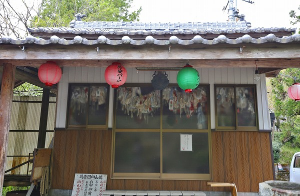
提灯がぶら下がっており、於安パークと書かれている。
このお寺に隣接して於安パークという公園があり、桜の名所らしい。
それよりもお堂の窓をご覧いただきたい。
お判りいただけるだろうか？
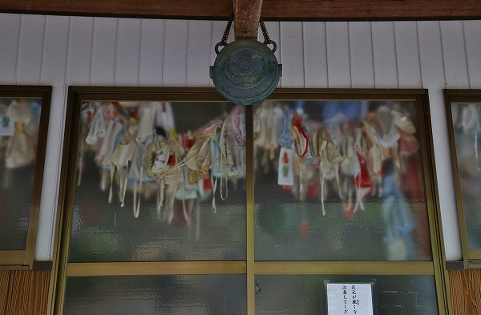
「何か」が大量にぶら下がっているのが…
恐る恐る扉を開けてみると…
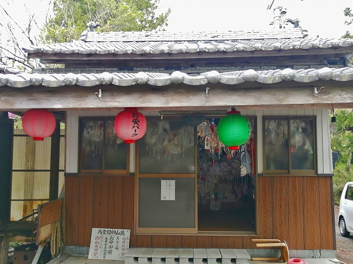
うぎゃー！
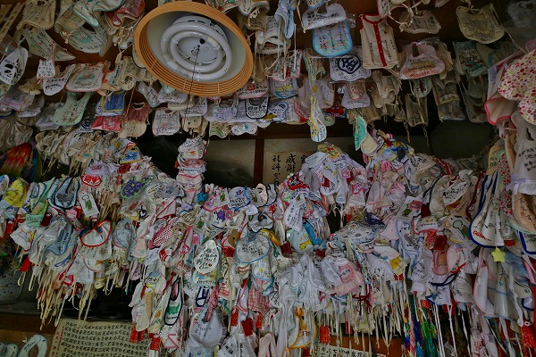
大量のよだれかけで埋め尽くされているではないか！
前を見ても
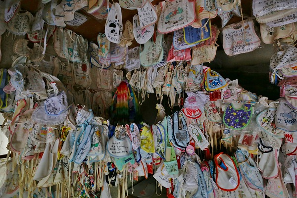
左を見ても
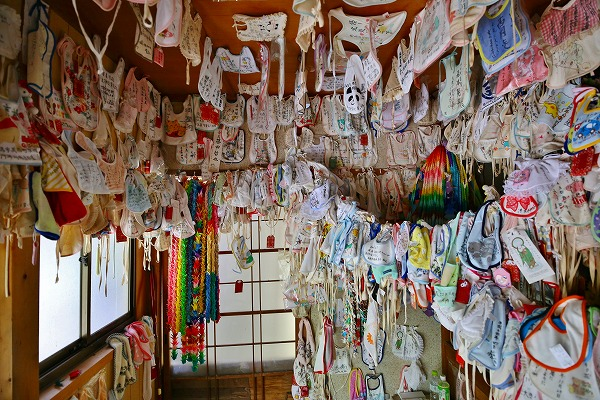
右を見ても
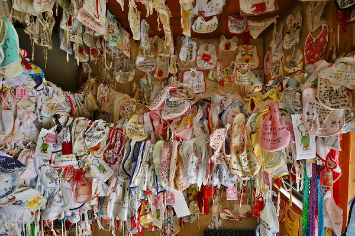
上を見ても
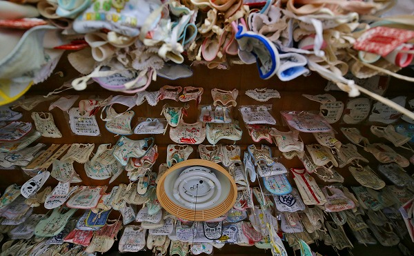
どこからどこまで
よだれかけだらけなのだ。
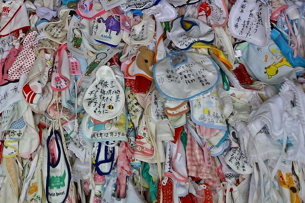
これは
安産と子授けを祈願する人が奉納したものだ。
見れば切実な願いが書かれている。
それにしてもこの量は凄いなあ。
ひょっとして全然片付けていないのか？とも思ったが奉納されているよだれかけは特に古そうなものはなく、比較的最近奉納されたものばかりに見える。
…ということはこんな辺鄙なところに大勢の人が参拝に来ているのだろうか。
場所といい、規模といい、にわかには信じられないがよだれかけの数がその人気の程を何よりも示している。
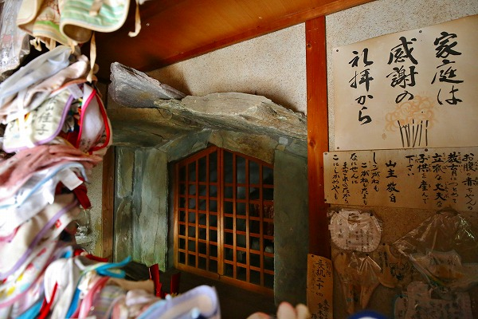
大量のよだれかけをかき分けるように奥を見ると石で覆われた洞窟のような場所があった。
恐らくここにお地蔵さんが祀られているのだろう。
なぜここが安産、子授けの神様になったのだろう？
お隣の絵馬堂に行くとその答えが判る。
絵馬堂の欄間にはズラリと絵が並んでいる。
それによると…
（ポヤヤヤヤヤ～ン）
むかーしむかし、この地には楠の巨木があったという。
天正年間に藩主の命によりこの木を伐り出そうとしたが、そのたびに山鳴り、地響き、烈風、稲妻が起こり、中々伐採することが出来なかった。
そこで奉行はこの大楠を熱心に祈念している
於安という姫に楠の精霊の説得を依頼する。
於安は大楠の根本で一晩祈り続け、とうとう「伐るべし」とのご宣託をうけたそうな。
かくして無事大楠は伐採されたのだが、その際、楠の精霊が於安の体内に入りその子を宿した。
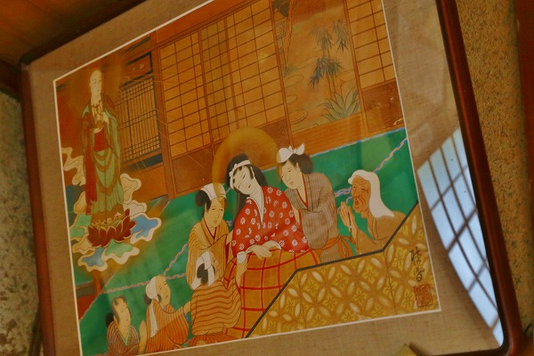
しかし不幸にも於安は出産の際、難産で亡くなってしまう。
その際に「願わくは今より後の人々に安産のご利益を垂れ給え」と言い残したという。
何を隠そう於安は地蔵菩薩の再来だったのである。
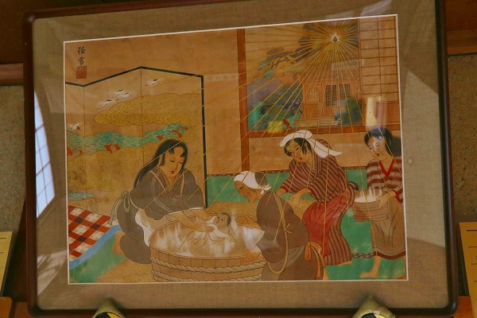
その後、於安は於安御前と呼ばれ安産、子授けの神として人々に信仰されるようになったとさ。
…というエピソードである。
この手の縁起話は
十中八九後付けで創作されたハナシだと思われるが、それにしてもこのハナシは幾つかの興味深い背景が透けて見えるような気がする。
ひとつは於安という姫の出自だ。
於安は
平家の落人の末裔だとされている。
そしてもう一つは大楠を伐る命令を出したのは阿波藩主の
蜂須賀公。
さらに大楠を伐ったのは豊臣秀吉の
朝鮮出兵のための船を仕立てるためだったというハナシ。
これらの背景を考えると単なる人情噺だけではない、何か歴史的な因縁を感じさせるストーリーに見えては来ませんか？
まず阿波藩主の蜂須賀公とは時期的に豊臣秀吉の側近中の側近である蜂須賀小六の子、家政だろう。
その家政が自ら船を仕立て朝鮮に出兵したわけだが、結果としては秀吉の怒りを買い、蟄居と一部領地没収という憂き目に合う。
その後、蜂須賀家は豊臣家と袂を別ち、徳川方に付くことになる。
ハナシを戻すとつまりこの地にあった大楠は蜂須賀家政が秀吉の野望への貢物として差し出した事になる。
その結果、秀吉の怒りを買い、蟄居させられた、という事は、考えようによっては
大楠の祟り、とも考えられなくもない。
一方、その大楠を説得したとされる於安は平家の落人である。
平家といえば源氏のライバル。
源氏の創設した鎌倉幕府を滅亡させたのは室町幕府。
その室町幕府の最後の将軍足利義昭は織田信長に放逐されながらも豊臣秀吉の家臣として召し抱えられ、朝鮮出兵にも出陣している。
ここから毎度おなじみ妄想と私見が入り混じった独断タイムに突入する事をご容赦くだされ。
この伝説における肝は
大楠と於安と蜂須賀の関係性である。
まず於安と蜂須賀の関係について。
平家の末裔である於安の敵（源氏）の敵（足利氏）の敵（織田）の家臣（豊臣）に干された蜂須賀家、という関係になる。
どこに主軸を置くかで評価は別れるが敵の敵の敵の敵ということは回り回ってつまり味方、ということになるの、かな？多分。
つまりこの縁起話は400年越しの長い因縁を経た「蜂須賀+於安連合軍ｖｓ大楠」という図式が成立する。
大楠を伐り船を造った蜂須賀家政はその戦い方によって秀吉の怒りを買った。
一方、於安はその精霊を体内に宿したものの、結局は難産で亡くなってしまう。
つまり、この於安御前のエピソードの主題は於安の悲劇譚などではなく
単なる大楠の祟り譚なのだ。
…自分で結論を出しておいてナンだが、身も蓋もない話だなあ、と思いましたね。
ただ、この縁起話が何故このような回りくどい話にしなければならなかったのか、という理由については思い当たる節はある。
それは江戸時代に入ってもこの地は蜂須賀家の領地だったわけで、その領主に対して「楠を切った祟りで秀吉をしくじったんだよ」とは面と向かって言いにくかった筈である。
そこで（本当にいたかどうかも分からない）於安というファクターを絡ませることで、大楠ｖｓ蜂須賀家という対立構図を複雑化させ、最終的には於安の悲劇噺、さらに安産の神様という伝承に落とし込んでいったのではなかろうか。
因みにこの地は平家の落人伝説が色濃く残っており、ここから南にある祖谷は平家の落人が住む集落が今でもあるという。
そのような地においてベーシックな平家の落人伝説をからめて
暗に大楠を伐った蜂須賀批判をしたかったのではなかろうか、というのが私の推察でございます。
…スミマセン。ハナシが長くなりましたが、歴史の知識がほぼ大河ドラマからだけの私からの妄想は以上です。
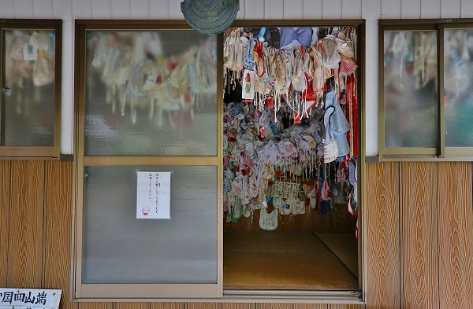
帰り際、改めてお堂の扉を開けてみる。
やっぱり凄い光景だ。
伝承にどんな裏意味があろうと、圧倒的なよだれかけの大群を見たら、そんなことは些細な事のようにすら思えてくる。
歴史は常に新しい人によってアップデートされていくものなのだ。